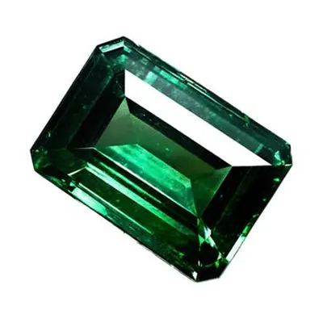

合成祖母綠與仿品：實驗室的綠色挑戰
實驗室長出的祖母綠，綠得比天然還「完美」——但過度完美，正是它最明顯的破綻。

核心定義
合成祖母綠是實驗室中培育的、化學與結構等同天然祖母綠的綠柱石——它不是仿品，是「真祖母綠」的實驗室版本。主流技術有兩種：助熔劑法（flux）與水熱法（hydrothermal）。
仿品則是另一回事：玻璃、綠色石英、綠色鋯石、人造尖晶石等，只是「看起來像祖母綠」的其他材質。合成是「真綠柱石假出身」，仿品是「根本不是綠柱石」——兩者的鑑定難度與法律意義都不同。
特徵與分類
| 類型 | 成分 | 鑑定特徵 |
|---|---|---|
| 天然祖母綠 | 綠柱石＋鉻釩 | 三相包裹體、花園 |
| 水熱合成 | 綠柱石（實驗室） | 生長紋、種晶片、釩釩訊號 |
| 助熔劑合成 | 綠柱石（實驗室） | 助熔劑殘留、波浪紋 |
| 玻璃仿品 | 矽酸鹽玻璃 | 氣泡、折射率低、無二色性 |
水熱法合成祖母綠品質極高、顏色濃豔，肉眼與天然幾乎無法分辨——它靠「生長紋」與「種晶片」洩露實驗室出身；助熔劑合成則殘留助熔劑與鉑金碎片。
科學原理
水熱法模擬祖母綠的天然熱液結晶：在高溫高壓水溶液中輸送養分，讓綠柱石在種晶上緩慢生長——數月可長出高品質晶體。它的內含物（生長紋、液體包裹體）與天然不同，實驗室光譜也有特徵訊號。
鑑定的關鍵：天然哥倫比亞祖母綠有「三相包裹體」，水熱合成有「釩釩吸收訊號」與「種晶線」，助熔劑合成有「助熔劑殘留」——顯微鏡與光譜儀，能讓實驗室出身無所遁形。
鑑定與鑑別方法
- 顯微鏡找生長紋、種晶線（合成）vs 三相包裹體（天然哥倫比亞）
- 分光鏡/光譜測釩釩吸收訊號
- 看顏色：合成祖母綠常過於濃豔均勻
- 玻璃仿品：氣泡、折射率低（約 1.5）
- 高價祖母綠送權威實驗室定論
市場行情與保養建議
合成祖母綠的市場定位是「誠實的實驗室寶石」：價格僅為天然的一小部分，適合追求綠色美感、預算有限的消費者。但「以合成充天然」在旅遊區與網購中屢見不鮮——這是買祖母綠最大的坑。
自保要點：異常便宜＋異常濃豔＝警覺；要求權威證書；高價交易先送實驗室。合成祖母綠的美是真的，但「身世」必須說清楚。
常見誤區
合成祖母綠是化學與結構等同天然的綠柱石——它是「實驗室出身的真祖母綠」，不是玻璃仿品。問題只在「誠實標示」。
高品質水熱合成祖母綠，肉眼與多數儀器都可能誤判——只有實驗室的顯微鏡與光譜分析能定論。
冷知識
天然祖母綠多帶花園內含物，合成祖母綠乾淨濃豔——「太完美」反而成了鑑定師的線索。完美，是實驗室的名片。
早在 1888 年，法國科學家就嘗試合成祖母綠；1960 年代水熱法成熟後，合成祖母綠才真正商業化。
反直覺觀點
合成祖母綠的成分與天然完全相同，靠的是生長特徵才能分辨——「實驗室仿天然」，比「玻璃仿綠」難抓得多。
當實驗室能複製祖母綠，天然祖母綠的「地質出身」就成為稀缺性核心——合成技術的進步，反而抬高了天然的價值。